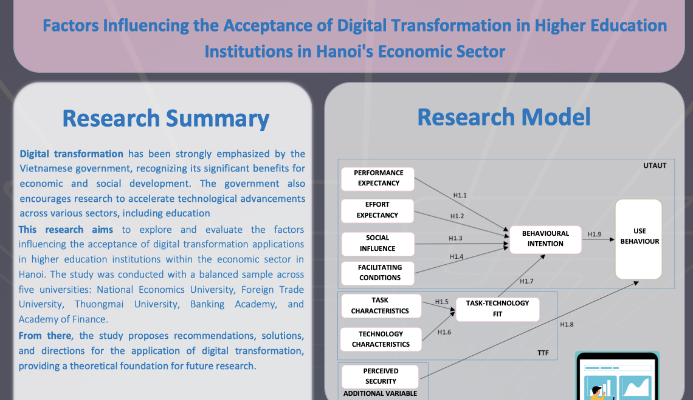
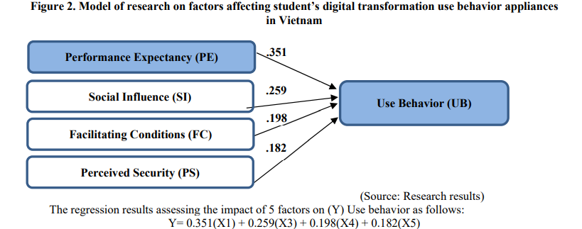
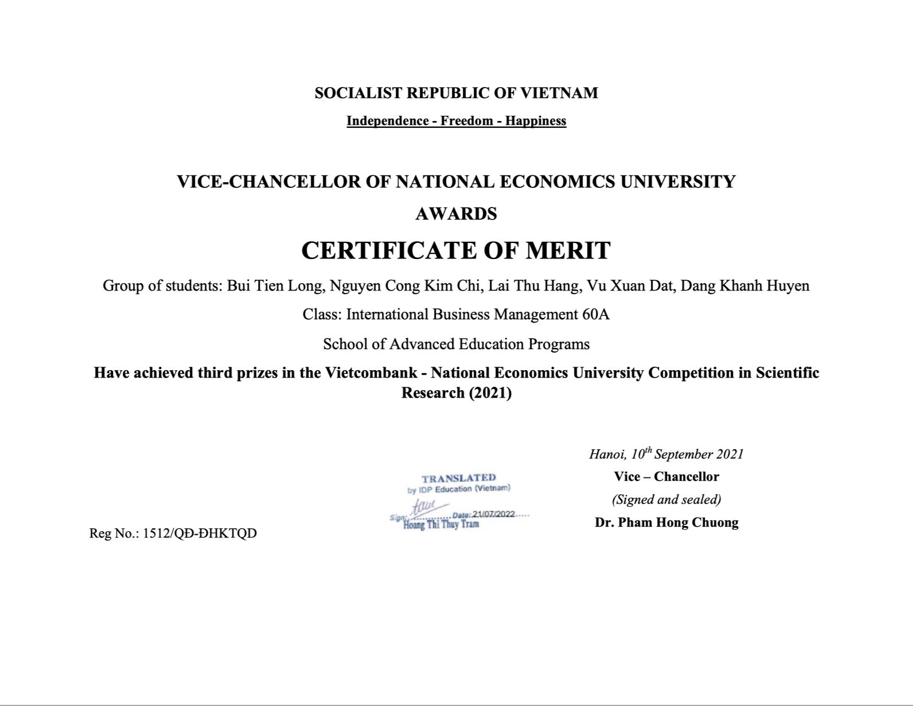
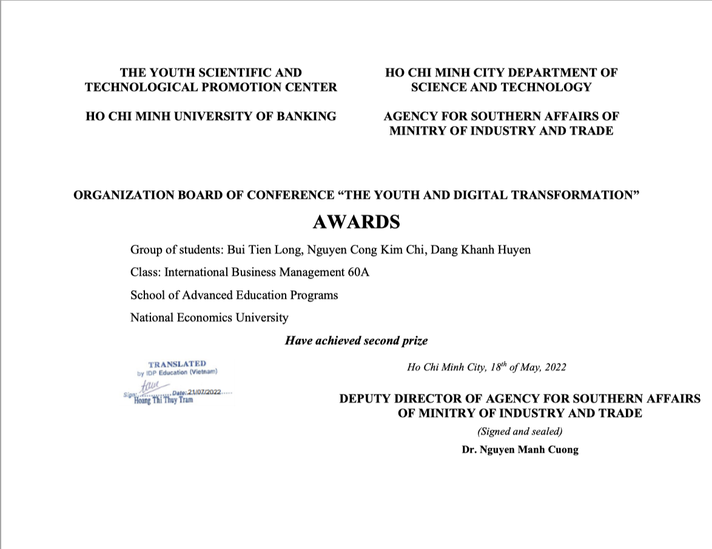

Quantitative Research Project
Co-author & Quantitative Researcher · National Economics University | 2020 – 2021

Overview
A peer-reviewed quantitative study I co-authored as part of the National Economics University Research Competition, investigating the factors that influence student acceptance and use behaviour of digital transformation applications across five major economics and business universities in Northern Vietnam. The paper was published in the Journal of Economics and Sustainable Development (Vol. 12, No. 8, 2021) and earned recognition in the university research competition.
What was the challenge?
Vietnam's higher education sector was under pressure to digitally transform — accelerated by COVID-19 — but there was limited empirical evidence on what actually drives students to adopt digital learning platforms in the local context. Existing technology-acceptance models (UTAUT, TAM) were developed in Western settings and did not fully capture factors like perceived security, which matter deeply to Vietnamese users.
What I did
- Extended the Unified Theory of Acceptance and Use of Technology (UTAUT) framework by integrating Perceived Security (PS) as an additional construct, alongside Task-Technology Fit (TTF) elements.
- Designed the survey instrument and questionnaire across 25+ validated items covering Performance Expectancy, Effort Expectancy, Social Influence, Facilitating Conditions, Perceived Security, Behavioural Intention, and Use Behaviour.
- Coordinated data collection across five universities (National Economics University, Foreign Trade University, Thuongmai University, Banking Academy, Academy of Finance), gathering 666 valid responses.
- Performed reliability testing (Cronbach's Alpha), EFA, CFA, and Structural Equation Modelling (SEM) with multigroup analysis in SPSS 25 and AMOS 23 to test the hypothesised relationships.
- Co-authored the paper, led interpretation of results, and drafted policy recommendations for government authorities and higher-education institutions.
Key findings
Four of the five hypothesised factors significantly predicted Use Behaviour, with standardised coefficients ranked as: Performance Expectancy (β = 0.351) > Social Influence (β = 0.259) > Perceived Security (β = 0.198) > Facilitating Conditions (β = 0.182). Effort Expectancy was not significant — suggesting Vietnamese economics students are motivated more by outcomes and peer influence than by perceived ease of use.

Tools & skills
SPSS · Survey Design · Multiple Regression · Exploratory Factor Analysis · Reliability Testing · UTAUT & TTF Frameworks · Academic Writing · Research Collaboration
Outcome
The study was published in a peer-reviewed international journal (DOI: 10.7176/JESD/12-8-02), presented as a research poster, and contributed empirical evidence supporting Vietnam's national digital-transformation strategy in higher education. It also shaped practical recommendations on e-government development, cybersecurity enforcement, and faculty digital-skills training.

